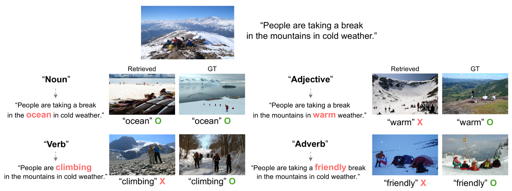
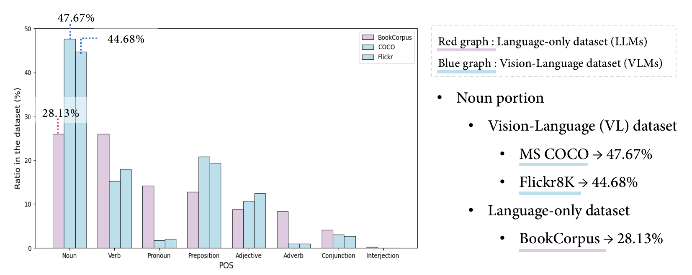
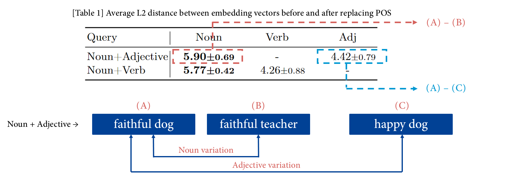
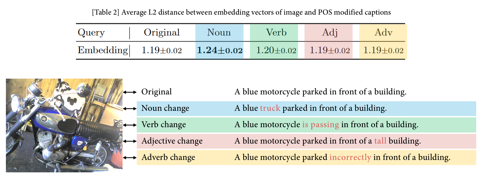
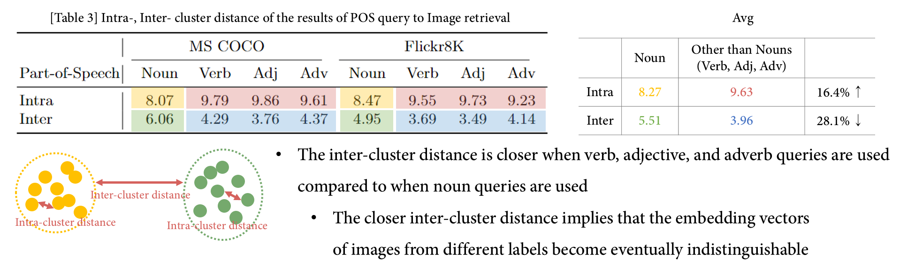
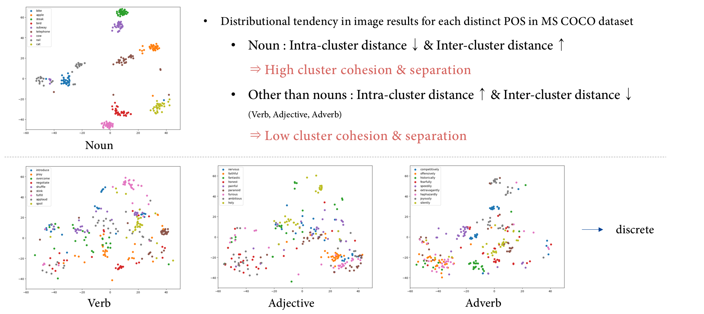
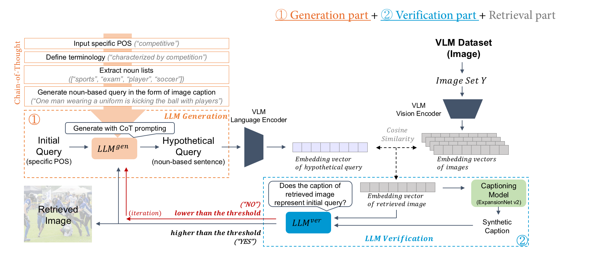
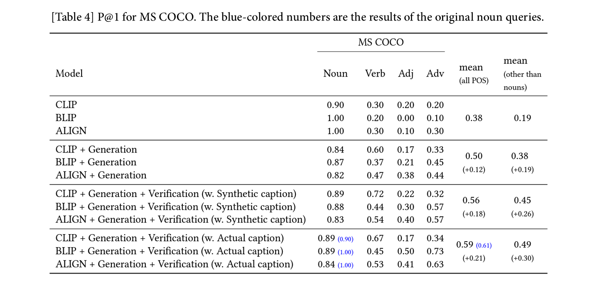
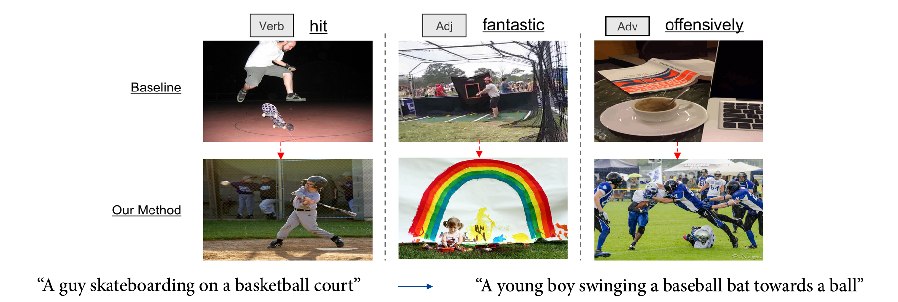

VLM의 품사 불균형 문제를 해결하기 위한 LLM과의 접목
Leveraging LLMs to Address Part-of-Speech Imbalances in VLMs
Python
Pytorch
Text
Image
Captioning
Fine-tuning
Prompt-Engineering
VLM의 문제를 발견하고, 이를 해결하기 위해 LLM을 활용한 연구입니다.
⭐ 프로젝트 소개
- 기간: 2023. 03 - 2024. 08
- 논문: 1저자(주저자)
- 한 줄 소개: VLM의 품사 불균형 문제를 찾아내고, LLM의 CoT Prompting을 통해 이를 보완합니다.

💎 왜 이 프로젝트가 중요한가?
문제 제기
- 널리 사용되는 VLM(Vision-Language Model)에서 간과되고 있었던 한계, 명사 이외의 품사의 의미를 파악하기 어려워 한다는 문제점을 발견했습니다.
목표
- 사용자의 검색 의도를 명확히 반영하기 위해서는 동사, 형용사, 부사가 가지는 의미또한 반영될 필요가 있습니다.
분석과 해결
- LLM(Large Language Model)은 VLM과 달리 명사 이외의 품사에 대한 충분한 학습이 이루어졌으며, 의미를 파악하고 있다는 사실을 비교하였습니다.
- 추가적인 학습 없이, 간단한 CoT(Chain-of-thought) Prompt Engineering을 적용하여 LLM의 능력을 leveraging하였고, 이를 통해 VLM의 한계를 극복하였습니다.
- 기존 대비 60.8%의 성능 향상을 이루어냈습니다.
🔎 핵심 기술은 무엇인가?
- VLM이 검색해야 하는 Query를 LLM에게 전달하여 Prompt Engineering을 통해 ’명사’로 보완한 Query로 재작성하였습니다.
- ’검증(Verification)’과정과 Feedback loop를 적용하여, 재작성된 Query가 사용자의 검색 의도를 유지하고 있는지 확인하였습니다.
- Image Captioning 모델을 도입하여, 처음 보는 Image에 대해서도 검증이 이루어질 수 있도록 하였습니다.
💡 어떠한 사고방식/생각을 거쳤는가?
문제 발견
- 사용자의 검색 의도가 충분히 반영되기 위해서는 어떠한 정보들이 필요할까?
- 명사, 동사, 형용사, 부사 등의 모든 품사에 대한 정보 반영이 필요하다.
- VLM은 object dection이 기반이 되는 모델인데, 과연 object를 표현하는 명사 이외의 품사에 대해서는 의미 반영이 이루어지고 있을까?
문제 증명
- VLM이 명사 이외의 동사, 형용사, 부사 품사에 대해 의미를 파악하지 못하고 있다는 것을 어떻게 증명할 수 있을까?
- 모든 품사를 가지고 있는 고정된 하나의 Query를 셋팅한 후, 각각의 품사를 바꿨을 때의 Query Embedding의 변화량을 보자!
- 실제로 각 품사별로 검색된 Image를 한 공간에 Mapping해서, 검색이 잘 되고 있는 지를 확인해보자!
방법 접근
- VLM이 명사 이외의 품사의 의미를 파악하지 못하는 문제를, 역으로 생각해보자.
- 그렇다면, VLM이 ’명사’는 잘 활용을 할 수 있는 모델이라는 의미이지 않을까?
- VLM이 다루기 어려워하는 품사들에 대해 ’명사’정보로 보완하여 도움을 줄 수 있지 않을까?
🌄 어떠한 시행착오를 겪었는가?
문제 발견
- LLM을 통해 재작성된 Query가 사용자의 검색 의도와 벗어나는 문제를 발견했습니다.
- ‘funny’ → ‘Comedian offers comic shows to the audience smile.’ → 관객들 앞에서 연설을 하고 있는 장면
- Cosine similarity를 통해 Text와 가장 유사한 Image를 검색해오기 때문에 발생한 문제였습니다.
- 이를 통해 검증 과정의 필요성을 확인하였습니다.
해결 방법
- Modal 간의 Mapping 시 유실될 수 있는 정보량을 고려하여, 검색된 Image 정보를 Text로 변환함으로써 Text 간의 의미론적 확인을 하고자 하였습니다.
- Image captioning 모델을 도입하여, 생성된 Caption 정보와 Query의 의미를 비교하였습니다.
- 50% 대의 성능 향상을 60%로 끌어올렸습니다.
🧶 부록
- 사용 코드: github
주요 문제 증명 실험
High portion of nouns in the VL pre-training datasets leads to the lexical gap between POS in the knowledge of VLMs and LLMs
VL 사전 학습 데이터셋의 높은 명사 비율은 VLM과 LLM의 품사 지식에 대한 lexcial gap을 야기한다.

High sensitivity of embedding to noun variations leads to the high influence on the meaning of the query
명사가 바뀌었을 때 embedding 값의 변동폭이 가장 크며, 이것은 query에 명사의 영향력이 가장 크다는 것을 뜻한다.
 
Low cluster cohesion & separation in T2I retrieval results with other than nouns lead to a decline in T2I retrieval performance
Text로 Image를 검색해 온 결과들의 군집화했을 때 명사 이외의 품사들은 낮은 응집도를 보였으며, 이는 검색 결과의 낮은 안정성을 의미한다.
 
파이프라인

메인 실험 결과
정량적 결과 
정성적 결과 